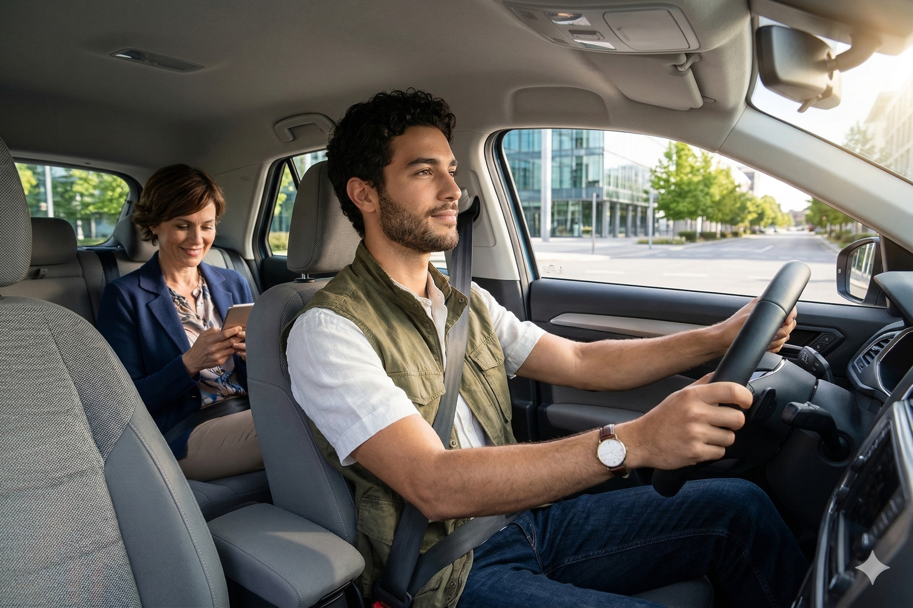
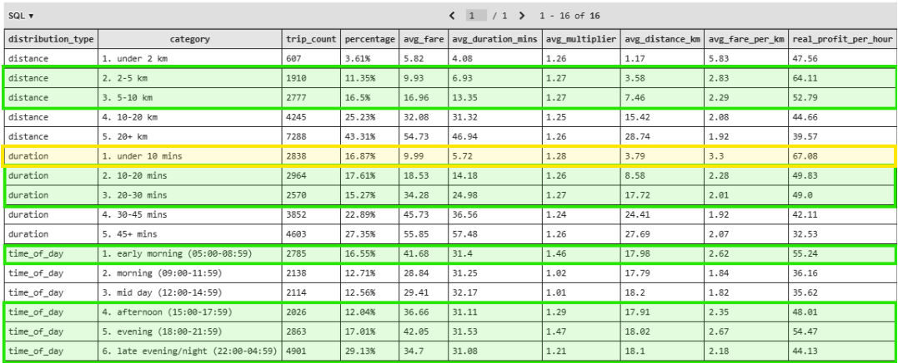

Rideshare Operations Analysis Case:
A SQL-driven exploration of a rideshare platform's operations, covering users, drivers, riders, trips, payments, and cancellations.
Case Description
A rideshare company wants to understand the operational dynamics of its platform in order to improve driver profitability, reduce cancellations, and optimize trip efficiency.
The dataset covers 2,000 users, 400 drivers, and 1,600 riders across 4 cities, spanning approximately 6 years of activity.
To uncover actionable insights, the analysis was structured around 3 main objectives:
- What does the platform's user and driver base look like?
- Which trips are the most profitable and why?
- What drives cancellations and how can they be reduced?
Data Insights
1. Platform Overview — Users, Drivers & Riders
The platform's user base is spread across 4 cities, with most users not being drivers themselves. Drivers have been on the platform for an average of 1.81 years, with a maximum tenure of 4 years, suggesting a relatively young driver workforce. The average driver rating sits at 4.15, with the lowest recorded at 2.59, indicating most drivers deliver a solid experience.
On the rider side, the average user has completed 10.52 trips with a mean rating of 3.99, pointing to a moderately engaged and reasonably well-behaved rider pool.

2. Trip Profitability — Distance, Duration & Time of Day
Not all trips are created equal. The analysis bucketed completed trips by distance, duration, and time of day to identify where real profit is generated.
Short trips under 5 km carry a lower platform cut (20%) compared to long trips over 20 km (45%), making them disproportionately profitable per hour of driving. Similarly, trips under 20 minutes maximize the number of rides a driver can complete in a shift, directly boosting hourly earnings.
Time of day matters too: early morning (05:00–08:59) and evening to night (18:00–04:59) windows show the strongest profitability, likely driven by commuter demand and surge pricing.

3. Cancellations — Who Cancels and Why
Cancellations are predominantly rider-driven. Personal emergencies are the leading stated reason, followed closely by long wait times — a direct operational signal that driver availability and dispatch efficiency need improvement.
Drivers cancel far less frequently, suggesting the core reliability issue lies on the demand side rather than supply. Reducing wait times through better driver positioning in high-demand zones could meaningfully cut cancellation rates.

4. Top Performing Drivers
The most profitable drivers share a clear profile: they operate in high-demand zones, complete short to medium distance trips, maintain a high trips-per-hour rate, and tend to peak on specific days of the week. The analysis ranks all active drivers by profit per hour — a metric that normalizes for trip length and reflects true earning efficiency.
Average speed, fare per km, and surge multiplier exposure round out the picture of what separates top earners from the rest of the fleet.